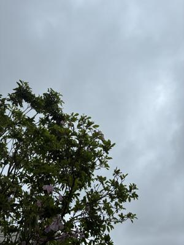
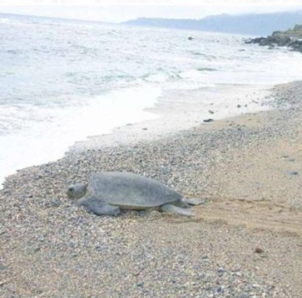
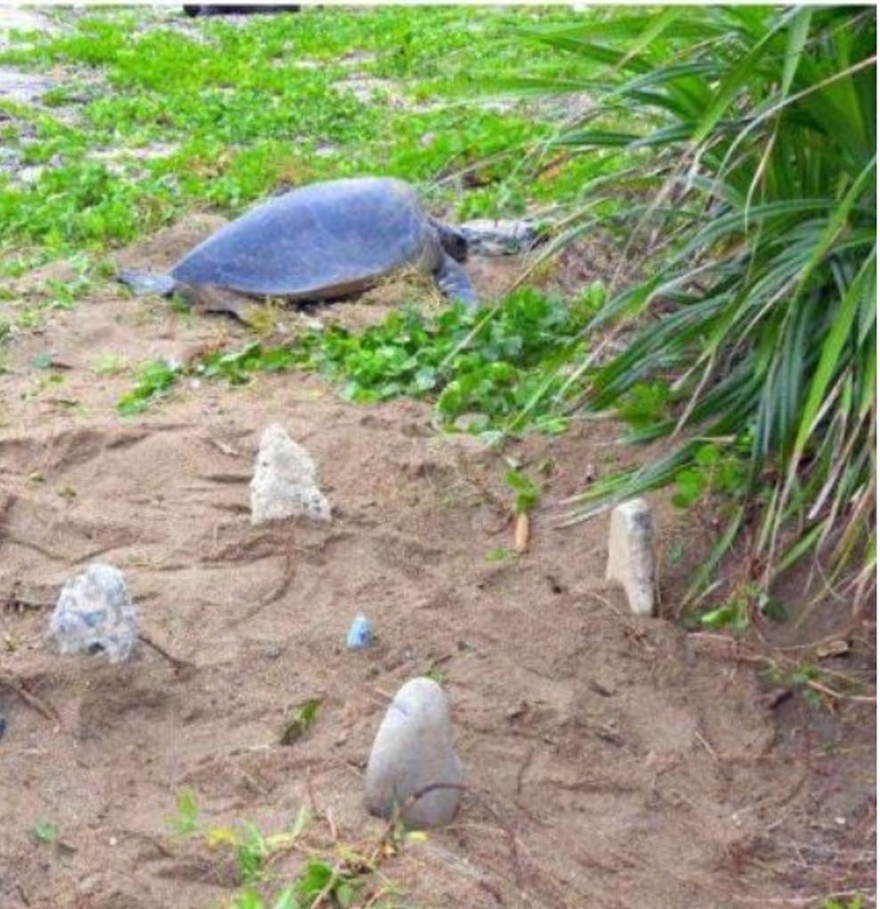
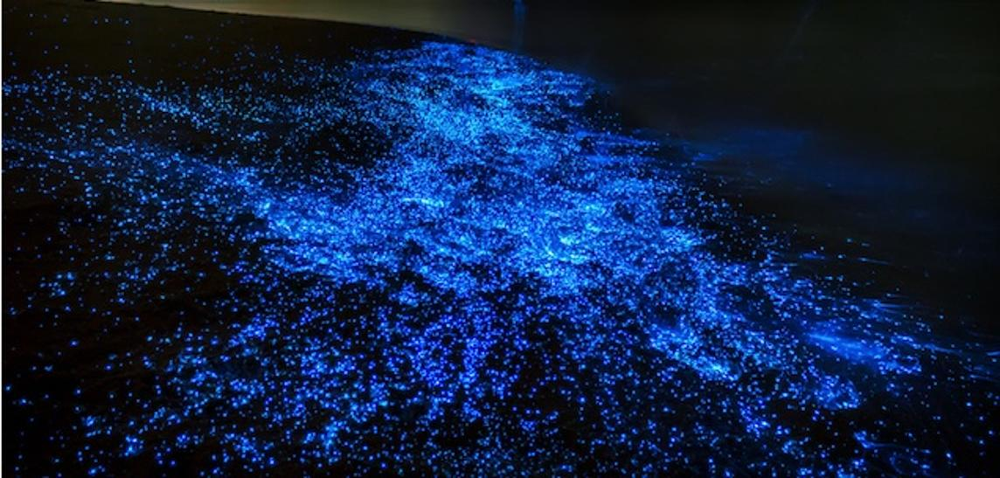

うるがいの話 ある日
最新: 津波注意報【うるがいの話 ある日】とは 一日だけのプログです
『うるがいの話』の最新一日だけのプログで、通信料が少なく経済的だ。カニの画像をクリックすると全ての日付が載る『うるがいの話』サイトを表示します
|
|
【うるがいの話】 うるがい(ｳﾙｶﾞｲ urugai)とは、『もずくがに』の名前でとても大きくなります。 |
|---|---|
|
|
【カミマヤーの話】 猫のことを方言でマヤーといいます。カミマヤー（kamimayaa）とは、神の猫のことです。 |
|
【たながぁの音楽】 たながぁ（ﾀﾅｶﾞｰ tanagaa）とは手長えびのことで、何種類かあり大きいのは車 エビぐらいになります。 |

|
【ぶながぁの話】 ぶながぁ(ﾌﾞﾅｶﾞｰ bunagaa)とは、赤い髪の毛、赤い身体、そして身長は１ｍ２０ｃｍ ぐらい、川の蟹を食べているの目撃された。場所は沖縄県国頭郡大宜味村のと ある村僕の隣近所に住んでいる爺さんから、聞いた話です。 |
|
|
【ギーマの話】 ギーマ(giima)とは、山原の里山に咲くスズランに似た、 花を付けます。実は食べられます、 気が付くと口の周りが紫になっています。 |
2026年06月08日 (月）津波注意報
16:17

どこかで経験したシーン、高校生の夏の夜、辺戸岬で父親と夜の
漁に行ったとき、海から上がり砂浜を歩いていると大きな亀を見
た。（下は、琉球新報から）

後で、父親にそのことを話すと亀をひっくり返したら良かったの
にと言われた。
中学生の頃、根路銘の砂浜で亀の足跡を見つけた。そして、ピン
ポン玉の卵を採った（食べなかった）。

夜の漁に行くと、夜光虫が綺麗だった。櫂を漕ぐと、その後に光
るのですよ。

『津波注意報、解除まで海から離れて』と夜の漁に行ったとき全
然、想定していなかった。本当に出くわしたら・・・・・。
昨日の夜、北部に災害レベル４が発令されていた。不謹慎かもし
れないが、やんばるダム貯水率を調べた。前日との貯水率の差が
７．７％、７８．２％まで回復していることを確認する。